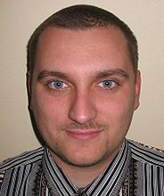
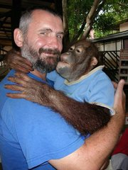
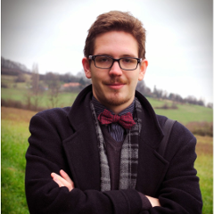

Štefan Korečko
RNDr. Ján Buša, CSc. (na fotke vľavo) absolvoval vysokoškolské a doktorandské štúdium v odbore Aplikovaná matematika
na fakulte Numerickej matematiky a kybernetiky Moskovskej štátnej univerzity. Od decembra 1986 je
pracovníkom Katedry matematiky a teoretickej informatiky FEI TU v Košiciach (je to jej súčasný názov).
Obľubuje matematiku, najradšej aplikovanú. Záľuby: knihy (najradšej o vede), futbal (menšieho rozsahu),
pedagogika.
Michal Kohútek
Magistersky student Aplikovanej Informatiky na Univerzite Konstantina
Filozofa v Nitre. Uz v skorom veku prepadol vasni ku GNU/Linux a
open-source komunite, co ho doviedlo k studiu informatiky. Medzi jeho
posledne projekty patri modernizacia kolkarne v Moravskom Lieskovom za
pouzitia Raspberry Pi a Arduina.
Bc. Terézia Mézešová
Aktuálne pracujem ako Application Security Specialist v Siemens Healthcare, kde sa venujem testovaniu bezpečnosti applikácií. Tiež dokončujem štúdium kybernetickej bezpečnosti na Technickej univerzite v Taline. Spolupracovala som na príprave cvičenia pre Letnú školu kyberkriminality organizovanú UPJŠ v Košiciach.